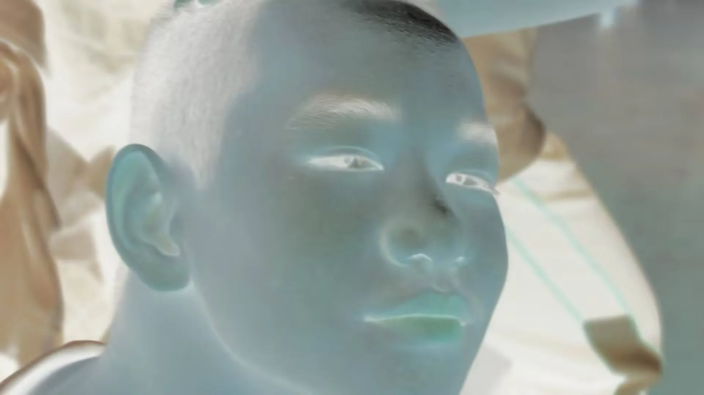

请勿靠近。
长相
一具被厚重塑料袋、保鲜膜或是某种半透明医疗废料死死裹住的人头。它的肤色呈现出极度不健康的、溺水般的青灰与惨白，像是被封存在福尔马林罐子里太久，泡发、发皱，表面覆盖着滑腻的青色水汽。五官高度折叠、错位：上半张脸是闭着眼、神态安详的男孩，眉毛平缓；但下半张脸的肌肉却被强行向上推挤，嘴唇外翻，形成了一个极度诡异、被迫营业般的僵硬微笑。眼睑半垂半闭，眼缝里透出惨白的死鱼眼光，没有瞳孔，也没有焦距，正穿过那层透明的薄膜，无神地盯着你。
身高
悬浮状态，连同包裹物约 50 厘米见方。它没有躯干和四肢，仅仅是一颗被密封的头。
体重
极轻。轻得像一颗只装了半袋防腐液的医疗垃圾。隔着薄膜摸上去，手感大概像冷藏库里放了太久、即将解冻的猪皮。
性格
绝对死寂中的错乱。它不说话，不喊叫，但它那半张脸写满安详、半张脸写满微笑的错位表情，透出一种极其荒诞的违和感。它最喜欢的就是贴在你的面前，和你隔着一层膜对视。当你感到毛骨悚然、开始反胃或想要退缩时，它的嘴角似乎会因为肌肉的挤压而上扬得更明显一点——那种笑，是停尸房里尸体被推入焚化炉时，受热后肌肉收缩产生的“笑”。
能力
认知腐蚀与生理同化。它不需要攻击，它的“反常”本身就是一种传染。只要盯着它的脸超过十秒，受害者就会感到头皮发麻，仿佛自己也被裹进了那层不透气的薄膜里。随后，受害者的呼吸会变得极其困难，皮肤开始泛出青灰色的水汽，面部肌肉失控——上半张脸想要痛哭，下半张脸却不受控制地向上拉扯，露出同样的僵硬笑容。最后，受害者会疯狂地寻找塑料袋、保鲜膜，想把自己紧紧裹住，直到窒息。
智力
未知。它不思考，它只是像一具标本一样“存在”。它用这种静谧而错乱的存在方式，强行扭曲周围活人的常识。
威胁等级
高。不流血，不暴力，只让你变得“反常”。当你发现自己在照镜子时，不自觉地对着镜子里那颗包裹物露出同样的僵硬微笑，并且觉得那样很正常时，你就已经成了它的同类。
← 返回档案室